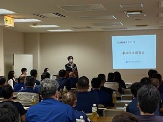
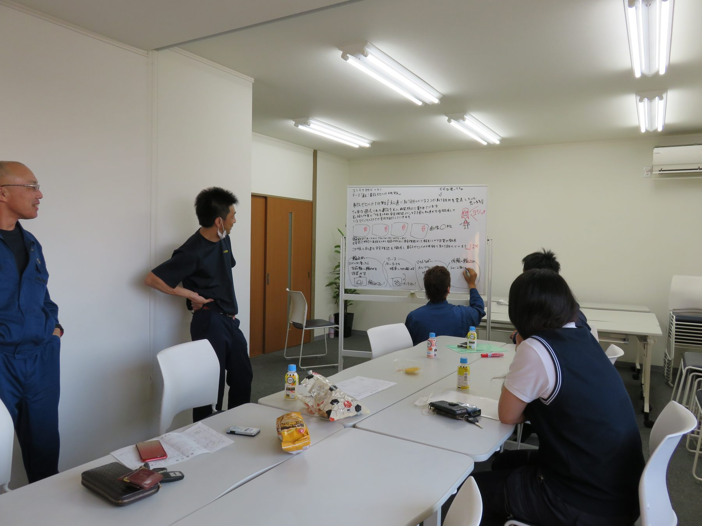
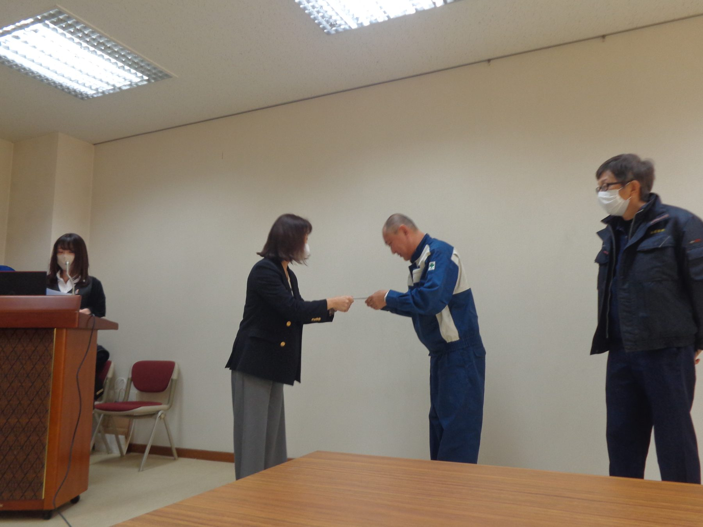
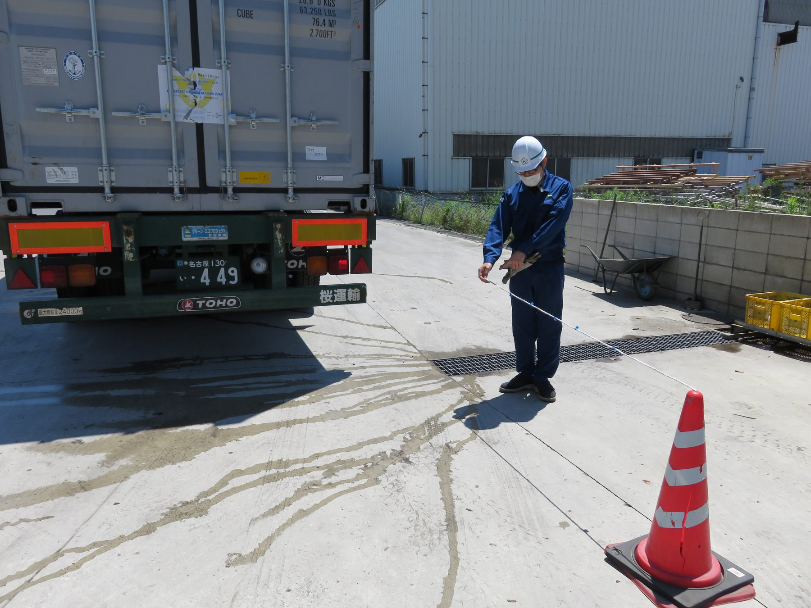

桜運輸株式会社は、「安全はすべてに優先する」を基本理念とし、全従業員が安心して働ける職場環境の実現を目指します。
輸送業務および関連作業における労働災害・交通事故・健康災害を未然に防止するため、以下の活動を推進します。
労働安全衛生法、道路交通法および関連法令を遵守し、安全意識の向上に努めます。
危険予知活動（KY活動）を徹底し、ヒヤリハット情報を共有して事故ゼロを目指します。
従業員の健康維持を重要課題と位置づけ、過労運転、疾病運転の防止に努めます。
定期的な安全教育・指導を行い、安全意識と運転技術の向上を図ります。
整理・整頓・清掃を徹底し、安全で快適な職場づくりを推進します。
管理者・従業員が一体となり、継続的な安全衛生活動を実施します。

全社員が集まって年２回安全会議を実施しています。全員真面目に話を聞いています。またドライブレコーダーを使用しての個別安全教育も行っており、ヒヤリハット画像・運行記録計を見ながら指導を行っております。

各グループの班長を中心に、毎月１回のグループミーティングを実施。ヒヤリハット提案についての展開や、毎月の安全目標について「どうだったか」などいろんな事を話し合い、ベテラン・若手のコミュニケーションの場にもなっております。

燃費はもちろんのこと、デジタコ点数も加味。総合して基準をクリアすると『達成賞』が贈呈されます。現在では約50%が達成賞を獲得しています。

毎月８と９のつく日は８っ９（バック）の日、カラーコーンを立て、目標の距離を決めて、ゲーム感覚だけど本気モードで後方の障害物に対しての距離感覚を身に付けています。
サービスに関するご依頼や、ご相談などございましたら、こちらからお気軽にお問い合わせください。